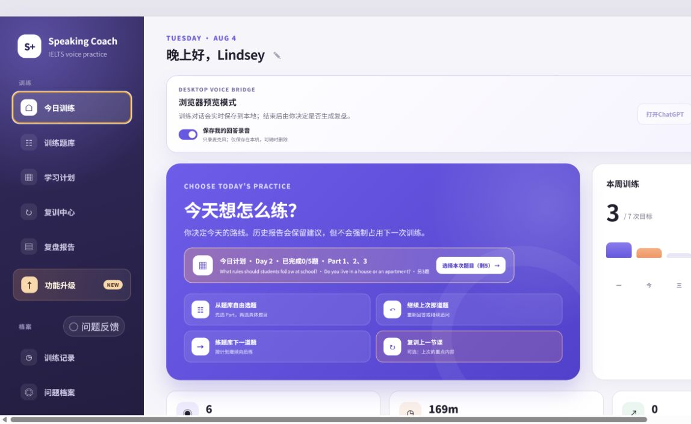

练完就散
聊了半小时，却没有留下结构化结果。下次打开，又从零开始。
它不只陪你开口，还会把每一次练习变成看得见的复盘、问题档案和下一步。

真实产品界面 · 已裁去私人信息选题 → Voice 模拟 → 复盘 → 单目标复训
真正让练习效率变低的，是下面这三件事。
聊了半小时，却没有留下结构化结果。下次打开，又从零开始。
知道哪里错了，但没有追踪这个问题后来有没有真的减少。
语法、词汇、逻辑一起抓，结果每次练习都没有明确焦点。
所以我想做的不是“再多一个 AI 对话框”，而是一套能把练习留下来的学习流程。
重点不是功能多，而是每一步都接得上下一步。
自由选题、继续上次、按计划练，或直接复训。
一次只问一道，保留真实口语训练节奏。
从真实回答里找纠错、表达、逻辑和词汇证据。
训练记录、问题状态、词汇和可选录音留在本机。
一次集中解决一个问题，再看它能不能迁移。
既可以自由练，也可以让计划帮你把任务拆到每天。
不是让 AI 一直讲，而是按雅思口语训练节奏，一次只问一道、等你完整回答。
训练中不边答边纠错，先保留完整表达。
Voice 结束后读取本次对话，生成结构化报告。
只有主动开启才录麦克风，并且只保存在本机。
依赖网络与学习者自己的 ChatGPT 账号
桌面端桥接下面是功能结构示意：所有判断都要回到这次训练里的真实回答。
保留原句、修改版本和中文原因。
不是堆高级词，而是把原意思说得更准确自然。
找到回答为什么短、散，或者反复卡在同一种结构。
只沉淀这次回答里真正用得上的升级项。
保留原立场和个人事实，不虚构经历。
不是只显示一次 AI 建议，而是看同一个问题后来有没有变化。
题目、时长、对话、复盘和可选录音，按日期回看。
记录真实出现次数，让问题从“新问题”走到“已稳定”。
把和你真实表达有关的词汇，沉淀成个人可用词库。
一次只改一个问题，通过新的回答验证能不能迁移。
我希望学员看到的，不只是“今天得了什么建议”，而是“我这段时间真的哪里变好了”。
目前是 Windows 桌面版：下载安装包 → 桌面快捷方式启动 → 登录自己的 ChatGPT → 在工具里选题和练习。学员不需要源码、Node.js、命令行、MCP 或 Codex。
如果是你，你最想先试哪一个功能？
IELTS 为其权利人商标；本工具为独立学习项目，与 IELTS 考试合作方及 OpenAI 均无从属或授权关系。